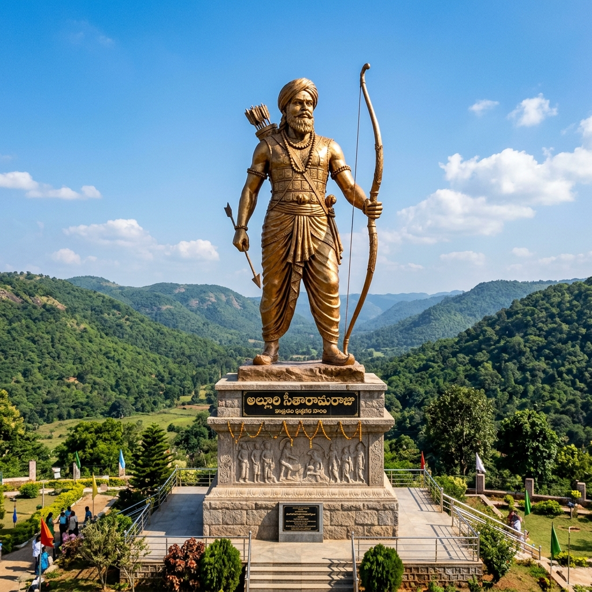
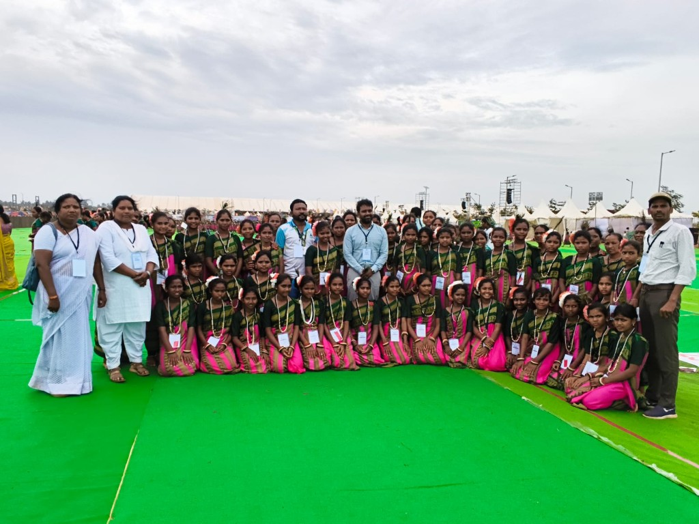
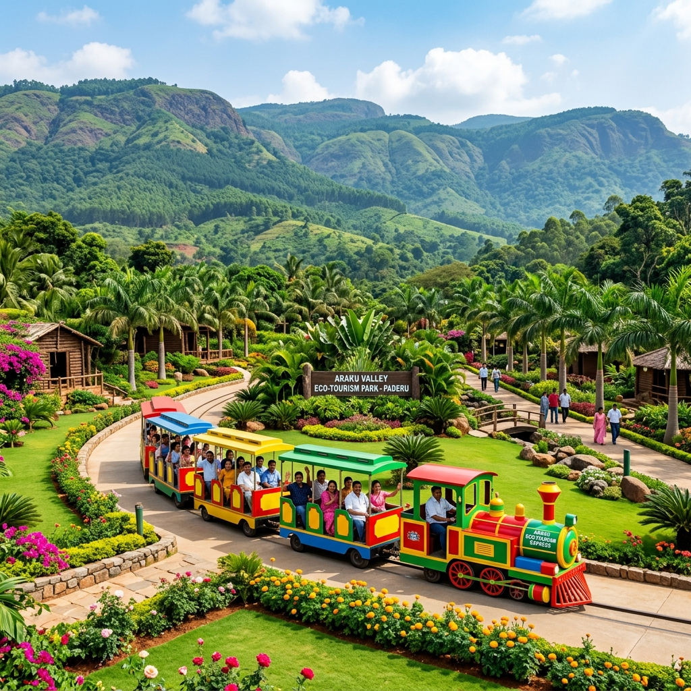
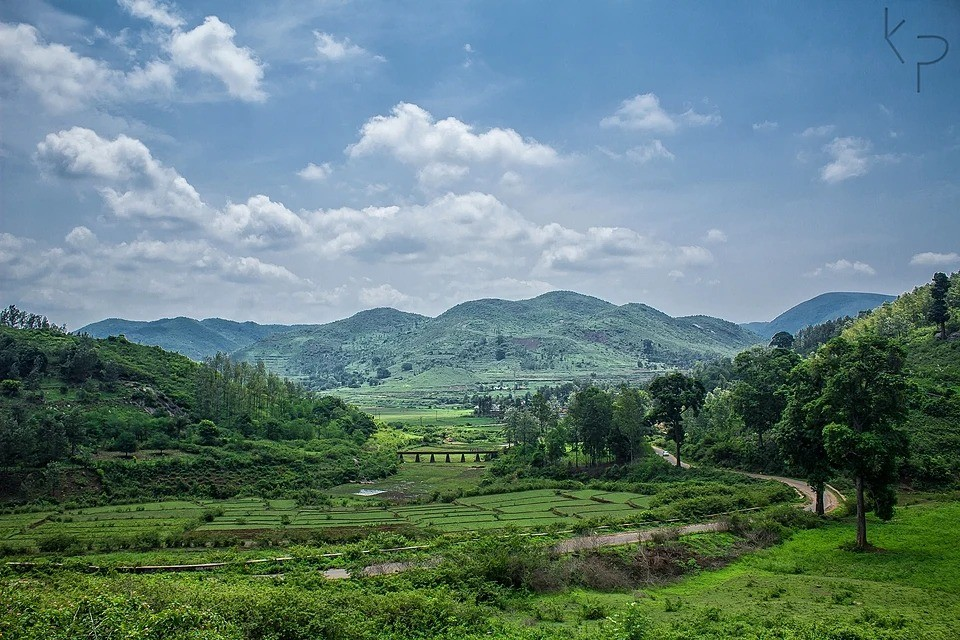
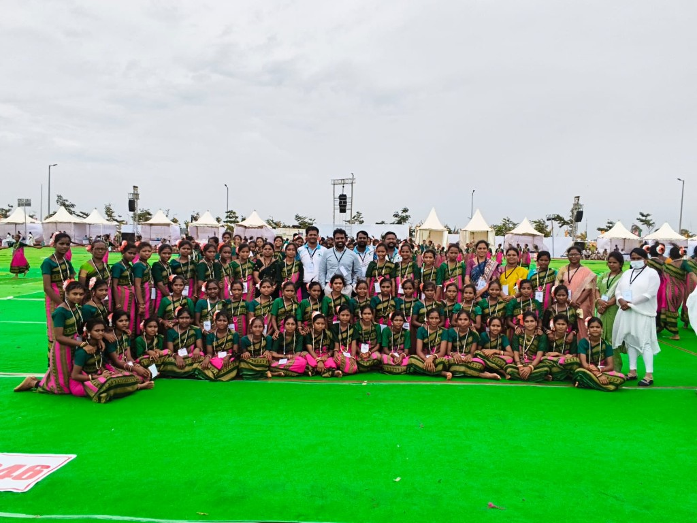
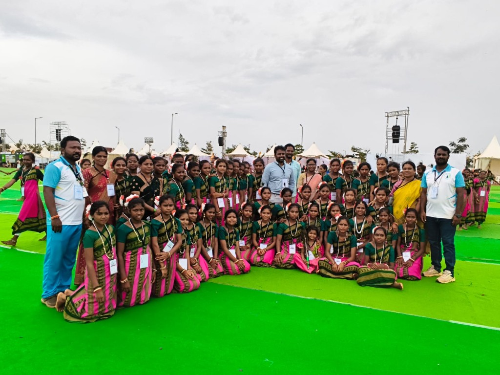
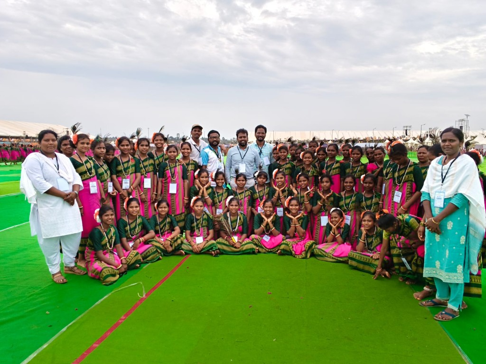
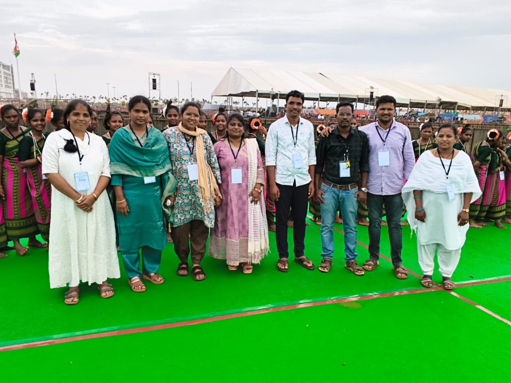

Alluri Sitharama Raju District
Alluri Sitharama Raju District is one of the North Eastern district of Andhra Pradesh and it lies between 17º - 17' and 18º-21' of Northern latitude and in between 80º - 53' and 82º - 50' in Eastern longitude. It is bounded on the North partly by the Odisha State Partly by Chattisgarh State and partly by Telangana State on the South by Anakapalli, Kakinada and East Godavari Districts on the West covered by Godavari River and East by Vijayanagaram District.
Physical Features
The District presents a distinct geographic division. It consists of the hilly regions covered by the Eastern Ghats with an altitude of about 900 meters dotted by several peaks exceeding 1200 meters. Forest block topping with 1615 meters embraces the Mandals of Paderu, G.Madugula, Munchingput, Araku Valley, Ananthagiri, Chinthapalli. The Koyyuru, G.K.Veedhi and Chinthapalli mandals are clubbed with Rampachodavaram Division of East Godavari District. Machkhund River which on reflow becomes Sileru, drains and waters the area in its flow and reflow and is tapped for Power Generation. Along the shore lies a series of salt and sandy swamps.
Sri Nara Chandrababu Naidu
Hon'ble Chief Minister Government of Andhra PradeshSmt. NISHANTHI T, I.A.S.
Collector & District Magistrate Alluri Sitharama Raju DistrictSri Aditya Varma, I.A.S.
Project Officer ITDA PaderuGlimpses of Alluri Sitharama Raju Agency Region








About ITDA Paderu
The Integrated Tribal Development Agency (ITDA) Paderu is responsible for planning, executing, and coordinating all tribal welfare and socio-economic development activities in the Scheduled Area of Alluri Sitharama Raju (ASR) District, Andhra Pradesh.
Covering 11 Scheduled Area mandals with over 94% Scheduled Tribe (ST) population, ITDA Paderu focuses on education, healthcare, infrastructure, organic coffee cultivation, and forest-based livelihoods.
Scheduled Agency Key Indicators
| Indicator | Official Value / Stat |
|---|---|
| Scheduled Area Mandals | 11 Mandals |
| Scheduled Tribe Population | ~6.26 Lakhs |
| ST Population Share | 94.13% |
| PVTG Communities | Khonds, Gadaba, Poorja |
| Primary TW Schools | 667 Schools |
* Source: ASR District Tribal Welfare Department & Ministry of Tribal Affairs publications.